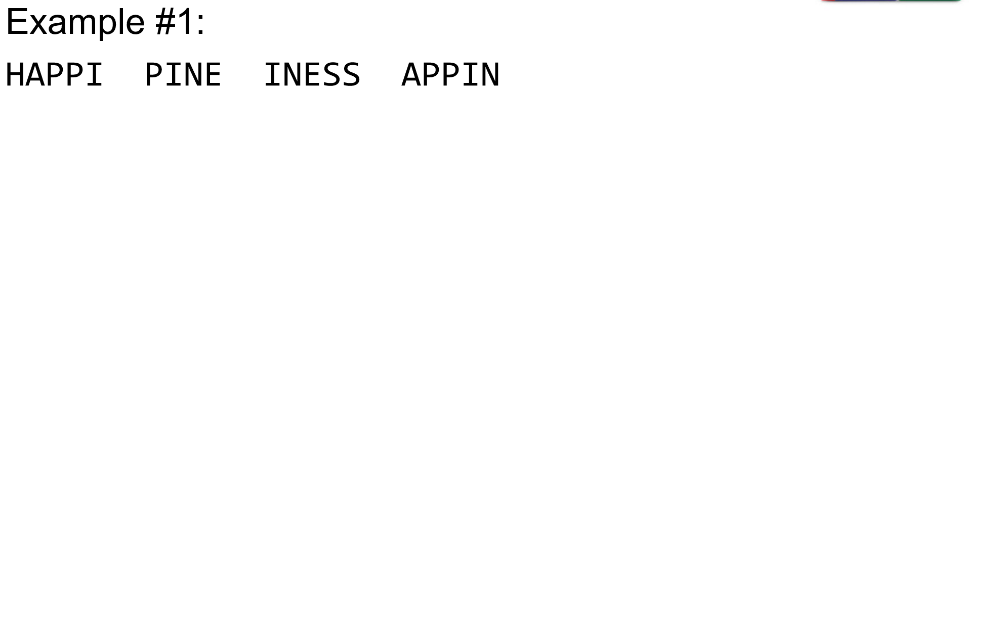
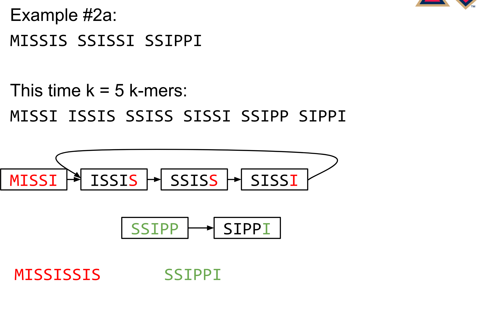
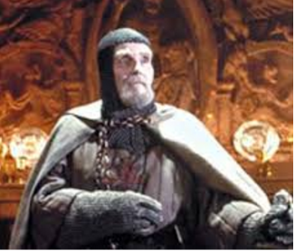
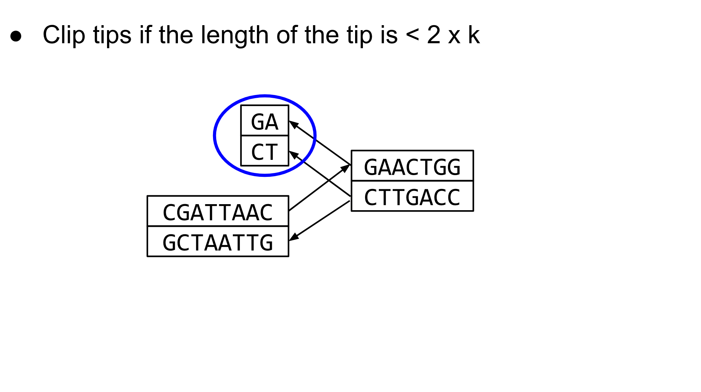

De Bruijn Graph Assembly
Contributors
 Simon Gladman
Simon Gladman
Questions
What are the factors that affect genome assembly?
How does Genome assembly work?
Objectives
Perform an optimised Velvet assembly with the Velvet Optimiser
Compare this assembly with those we did in the basic tutorial
Perform an assembly using the SPAdes assembler.
.enlarge120[
De novo Genome Assembly
Part 2: De Bruijn Graph Assembly
]
With thanks to T Seemann, D Bulach, I Cooke and Simon Gladman
.enlarge120[
de Bruijn Graphs
] .pull-left[
- Named after Nicolaas Govert de Bruijn
- Directed graph representing overlaps between sequences of symbols
-
Sequences can be reconstructed by moving between nodes in graph ] .pull-right[ .image-50[] ] — .enlarge120[# de Bruijn Graphs
- A directed graph of sequences of symbols
- Nodes in the graph are k-mers
-
Edges represent consecutive k-mers (which overlap by k-1 symbols) ] Consider the 2 symbol alphabet (0 & 1) de Bruijn Graph for k =3
 —
.enlarge120[# Producing sequences
—
.enlarge120[# Producing sequences - Sequences of symbols are produced by moving through the graph ]
.enlarge120[
K-mers? .pull-right[.image-25[ ]]
]]
- To be able to use de Bruijn graphs, we need reads of length L to overlap by L-1 bases.
- Not all reads will overlap another read perfectly.
- Read errors
- Coverage “holes”
- Not all reads are the same length (depending on technology and quality cleanup)
To help us get around these problems, we use all k-length subsequences of the reads, these are the k-mers. ] — .enlarge120[
What are K-mers? .pull-right[.image-25[]]]

.enlarge120[
K-mers de Bruijn graph .pull-right[.image-25[]]]
 — .enlarge120[
K-mers de Bruijn graph .pull-right[.image-25[]]]
 —
.enlarge120[
—
.enlarge120[
K-mers de Bruijn graph .pull-right[.image-25[]]]
 —
.enlarge120[
—
.enlarge120[
K-mers de Bruijn graph .pull-right[.image-25[]]]

.enlarge120[
The problem of repeats .pull-right[.image-25[]]]
 —
.enlarge120[
—
.enlarge120[
The problem of repeats .pull-right[.image-25[]]]
 —
.enlarge120[
—
.enlarge120[
The problem of repeats .pull-right[.image-25[]]]
 —
.enlarge120[
—
.enlarge120[
The problem of repeats .pull-right[.image-25[]]]
 —
.enlarge120[
—
.enlarge120[
Different k .pull-right[.image-25[ ]]]
]]]
 —
.enlarge120[
—
.enlarge120[
Different k .pull-right[.image-25[]]]
 —
.enlarge120[
—
.enlarge120[
Different k .pull-right[.image-25[]]]
 —
.enlarge120[
—
.enlarge120[
Different k .pull-right[.image-25[]]]

.enlarge120[
Choose k wisely .pull-right[.image-25[]]]
.enlarge120[
- Lower k
- More connections
- Less chance of resolving small repeats
- Higher k-mer coverage
- Higher k
- Less connections
- More chance of resolving small repeats
- Lower k-mer coverage
Optimum value for k will balance these effects.
]
.enlarge120[
Read errors .pull-right[.image-25[]]]
.image-75[ ]
]
 —
.enlarge120[
—
.enlarge120[
Read errors .pull-right[.image-25[]]]
.image-75[]
 —
.enlarge120[
—
.enlarge120[
Read errors .pull-right[.image-25[]]]
.image-75[]
 —
.enlarge120[
—
.enlarge120[
Read errors .pull-right[.image-25[]]]
.image-75[]

.enlarge120[
More coverage .pull-right[.image-50[]]]
.enlarge120[
- Errors won’t be duplicated in every read
- Most reads will be error free
- We can count the frequency of each k-mer
- Annotate the graph with the frequencies
- Use the frequency data to clean the de Bruijn graph
More coverage depth will help overcome errors! ] — .enlarge120[
Read errors revisited .pull-right[.image-50[]]]

.enlarge120[
Another parameter - coverage cutoff]
.enlarge120[
- At what point is a low coverage indicative of an error?
- Can we ignore low coverage nodes and paths?
- This is a new assembly parameter
Coverage cutoff ]
.enlarge120[
de Bruijn graph assembly process]
.enlarge120[
- Select a value for k
- “Hash” the reads (make the kmers)
- Count the kmers
- Make the de Bruijn graph
- Perform graph simplification steps - use cov cutoff
- Read off contigs from simplified graph
]
.enlarge120[
Graph simplification]
Step 1: Chain merging
.enlarge120[
Graph simplification]
Step 2: Tip clipping

.enlarge120[
Graph simplification]
.pull-left[
 ]
.pull-right[
]
.pull-right[
Step 3: Bubble collapsing
- Detect redundant paths through graph
- Compare the paths using sequence alignment
- If similar, merge the paths
.reduce70[Image: Zerbino & Birney 2008] ]
.enlarge120[
Graph simplification
Step 4: Remove low coverage nodes
- Remove erroneous nodes and connections using the “coverage cutoff”
- Genuine short nodes will have a high coverage
]
.enlarge120[
Make contigs
- Find an unbalanced node in the graph
- Follow the chain of nodes and “read off” the bases to produce the contigs
- Where there is an ambiguous divergence/convergence, stop the current contig and start a new one.
- Re-trace the reads through the contigs to help with repeat resolution
]
.enlarge120[
Velvet
Velvet has two separate programs:
- Velveth
- Makes the k-mers and
- Efficiently counts (hashes) them
- All in O(N) time
- Velvetg
- Makes the graph - O(U) time. U = unique k-mers.
- Simplifies it
- Makes contigs - O(E) time. E = edges in graph
But: You need to choose k and c wisely!
]
.enlarge120[
Velvet - Paired end scaffolding
- Breadcrumb algorithm ]
.enlarge120[
Assembly Exercise #2
- We will perform an optimised assembly using the Velvet Optimiser in Galaxy.
- The optimiser will pick a good value for k and c, and perform graph simplification for us.
- We will compare the results with our earlier, simple assemblies.
]
—
.enlarge120[
Extensions of the idea
] — .enlarge120[
SPAdes .pull-right[.image-50[
 ]]]
]]]
.enlarge120[
-
de Bruijn graph assembler by Pavel Pevzner’s group out of St. Petersburg
- Uses multiple k-mers to build the graph
- Graph has connectivity and specificity
- Usually use a low, medium and high k-mer size together.
-
Performs error correction on the reads first
-
Maps reads back to the contigs and scaffolds as a check
-
Under active development
- Much slower than Velvet
- Should be used in preference to Velvet now.
]
.enlarge120[
A move back to OLC]
.pull-left[ .enlarge120[
- New long read technologies
- PacBio and MinIon
- Assemblers: HGap, CANU
- Use overlap, layout consensus approach
- CANU can perform hybrid assemblies with long and short reads ] ]
.pull-right[ ] — .enlarge120[# Bandage
- Assembly graph viewer and manipulator
- Written by Ryan Wick of Centre for Systems Genomics - Uni. Melbourne, Australia
]

.enlarge120[# Assembly Exercise #3
- We will perform an assembly with SPAdes in Galaxy
- We will again look at the assembly metrics and compare them with our sample and optimised Velvet assemblies. ]
Key Points
- We learned about how the choice of k-mer size will affect assembly outcomes
- We learned about the strategies that assemblers use to make reference genomes
- We performed a number of assemblies with Velvet and SPAdes.
- You should use SPAdes or another more modern assembler than Velvet for actual assemblies now.
Thank you!
This material is the result of a collaborative work. Thanks to the Galaxy Training Network and all the contributors! This material is licensed under the Creative Commons Attribution 4.0 International License.
This material is licensed under the Creative Commons Attribution 4.0 International License.